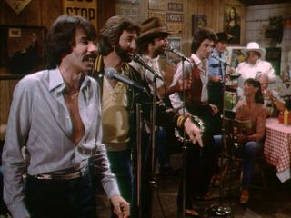

Off-Road Racing
Someday the mountain might get 'em, but the law never will
We have the best tracks around. Every month the route changes and includes plenty of jumps. Lot's of fun for the whole family. Perhaps someday, somebody will beat our current reigning champions: Bo and Luke Duke for 7 years running.

Live music at the Boar's Nest
The Boar's Nest can't be beat when it comes to live music. So many big name acts come through our little county and just have to stop by and play after running into our local Sheriff, Roscoe. You never know who you might see when stepping through it's doors. Some of the most recent shows were:
- The Oak Ridge Boys
- Roy Orbison
- Buck Owens
- Johnny Paycheck
- Mel Tillis
And that was just last MONTH!
Finally, there are plenty of side roads that lead to secluded out of the way fishing holes hwere you can catch the biggest and tastiest pan fish in Georgia. Plenty of camping offered too if the country life style of Hazzard isn't quiet enough for you.